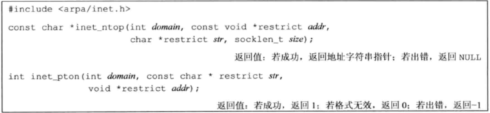
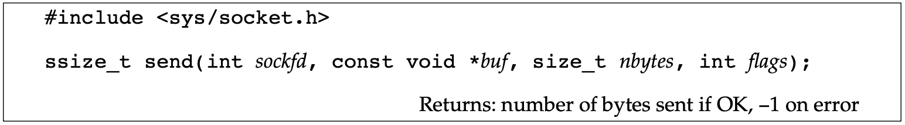

Socket 描述符 Socket 描述符就像文件描述符，它是获取 Socket 的一个入口，在 Unix 系统汇总通常它被实现为文件描述符。
Socket 相关操作函数
average
描述
socket
创建一个 Socket。
shutdown
禁用 Socket IO
参数 domain 确定了地址格式。每种 domain 在表示地址时都有它自己的格式。domain 参数的值域如下：
这些常量都以 AF_ （address family）开头。
大多数系统用 AF_LOCAL来作为 AF_UNIX 的一个别名。
参数 type 用于表示 Socket 的类型。取值如下：
参数 protocol 通常为 0，表示对于给定的 domain 和 Socket 类型使用默认的协议。当对于同一个 domain 和 Socket 类型存在多种协议，则参数 protocol 可用于指定其中具体的某个协议。
AF_INET domain 且类型为 SOCK_STREAM 的 socket 的默认协议是 TCP。
Internet domain socket 的相关协议如下：
SOCK_STREAM socket 提供字节流服务。当读端从 SOCK_STREAM socket 中读取时并不一定能读取到写端写入的全部数据，因此需要多次读取才能读取到完整数据。
SOCK_SEQPACKET socket 与 SOCK_STREAM 类似，只不过其提供面向消息的服务。即读端能够读取到写端写入的完整消息。流控制传输协议（Stream Control Transmission Protocol, SCTP）提供了报文按序到达的服务。
SOCK_RAW socket 提供了面向 IP 层的报文传输接口。这时应用需要自己构建协议头。为了阻止恶意程序绕过安全机制创建报文，在创建 raw socket 时需要超级用户权限才可以。
尽管 Socket 描述符实际上是以文件描述符的形式而存在的，但并不是所有的参数为文件描述符的函数都能操作 Socket。下图展示了允许混用的函数：
参数 how 的取值
SHUT_RD
禁用从 Socket 中读
SHUT_WR
禁用 Socket 数据传输
SHUT_RDWR
禁用读写 Socket
shutdown() 与 close() 的区别：
只有关闭最后一个活动引用时，close 才释放网络端点。
shutdown 允许使一个套接字处于不活动状态，和引用它的文件描述符数量无关。另外，也可以方便地关闭套接字双向传输的任意一个方向。
寻址 字节序
大端：最大字节地址出现在最低有效字节（Least Significant Byte， LSB）
无论字节如何排序，最高有效字节（Most Significant Byte，MSB）总是在左边，最低有效字节总是在右边。
在同一个机器上通信是不用考虑字节序的，但在异构的主机之间通信则要考虑。因此 TCP/IP 建议使用大端字节序。
在 TCP/IP 中地址使用网络字节序表示，因此需要将网络字节序转换为处理器的字节序。
处理器字节序与网络字节序转换函数：
h 表示主机字节序n 表示网络字节序l 表示长整数（4字节）s 表示短整数（4字节）
地址格式 
inet_ntop：将网络字节序的二进制地址转换成文本字符串格式（如 a.b.c.d）。
参数 domain 取值：AF_INET、AF_INET6
对于 inet_pton，若 domain 为 AF_INET，则缓冲区 addr 需要足够大的空间来存放一个 32 位地址；
地址查询 网络配置信息可以存储在 /etc/hosts 中或者 /etc/services 中或者 DNS 中或者 NIS 中。无论放在何处，都可以用下列函数进行访问。
用于查找给定计算机系统的主机信息。
若主机数据库文件没有打开，gethostent 将会打开它。sethostent 会打开文件，若已打开则将读取为止移动到起始位置。若 参数 stayopen 置为非零值，则文件在调用 gethostent 之后仍旧打开。
gethostent 返回的 hostent 指针指向一个静态数据缓冲区（每次调用 gethostent 都会覆盖该区域）。
gethostent 返回的 hostent 中的地址格式是网络字节序的。
用于获取网络名称和网络编号。
所返回的网络编号（n_net）格式是网络字节序的。n_addrtype 可以设置为地址族常量，如 AF_INET.
用于协议名称与协议号的相互映射。
每个服务有一个唯一的端口号来支持
getservbyname：将一个服务名映射到一个端口号；
servent 结构如下：
将一个主机名和一个服务名映射到一个地址。需要提供主机名、服务名，或者两者都提供。若仅提供一个，另外一个必须是空指针。主机名可以是一个节点名或点分格式的主机地址。
getaddrinfo 返回一个链表结构 addrinfo（freeaddrinfo 可以释放该结构）。
参数 hint 是一个用于过滤地址的模板，包括 ai_family、ai_flags、ai_protocol、ai_socketype 字段（其余字段必须设置为 0，指针字段必须为空）。
ai_flags 取值如下：
getaddrinfo 调用失败时，gai_strerror 用于将返回的错误码转换成错误消息。
用于将一个地址转换成一个主机名和一个服务名。
参数 addr 用于存储转换后的主机名和服务名。若 host 为空，则指向一个长度为 hostlen 字节的缓冲区用于存放返回的主机名。若 service 为空，则指向一个长度为 servlen 字节的缓冲区用于存放返回的服务名。
参数 flags 用于控制转换的方式，值域如下：
示例
1 2 3 4 5 6 7 8 9 10 11 12 13 14 15 16 17 18 19 20 21 22 23 24 25 26 27 28 29 30 31 32 33 34 35 36 37 38 39 40 41 42 43 44 45 46 47 48 49 50 51 52 53 54 55 56 57 58 59 60 61 62 63 64 65 66 67 68 69 70 71 72 73 74 75 76 77 78 79 80 81 82 83 84 85 86 87 88 89 90 91 92 93 94 95 96 97 98 99 100 101 102 103 104 105 106 107 108 109 110 111 112 113 114 115 116 117 118 119 120 121 122 123 124 125 126 127 128 129 130 131 132 133 134 135 136 137 138 139 140 141 142 143 144 145 #include "apue.h" #if defined(SOLARIS) #include <netinet/in.h> #endif #include <netdb.h> #include <arpa/inet.h> #if defined(BSD) #include <sys/socket.h> #include <netinet/in.h> #endif void print_family (struct addrinfo *aip) { printf (" family " ); switch (aip->ai_family) { case AF_INET: printf ("inet" ); break ; case AF_INET6: printf ("inet6" ); break ; case AF_UNIX: printf ("unix" ); break ; case AF_UNSPEC: printf ("unspecified" ); break ; default : printf ("unknown" ); } } void print_type (struct addrinfo *aip) { printf (" type " ); switch (aip->ai_socktype) { case SOCK_STREAM: printf ("stream" ); break ; case SOCK_DGRAM: printf ("datagram" ); break ; case SOCK_SEQPACKET: printf ("seqpacket" ); break ; case SOCK_RAW: printf ("raw" ); break ; default : printf ("unknown (%d)" , aip->ai_socktype); } } void print_protocol (struct addrinfo *aip) { printf (" protocol " ); switch (aip->ai_protocol) { case 0 : printf ("default" ); break ; case IPPROTO_TCP: printf ("TCP" ); break ; case IPPROTO_UDP: printf ("UDP" ); break ; case IPPROTO_RAW: printf ("raw" ); break ; default : printf ("unknown (%d)" , aip->ai_protocol); } } void print_flags (struct addrinfo *aip) { printf ("flags" ); if (aip->ai_flags == 0 ) { printf (" 0" ); } else { if (aip->ai_flags & AI_PASSIVE) printf (" passive" ); if (aip->ai_flags & AI_CANONNAME) printf (" canon" ); if (aip->ai_flags & AI_NUMERICHOST) printf (" numhost" ); if (aip->ai_flags & AI_NUMERICSERV) printf (" numserv" ); if (aip->ai_flags & AI_V4MAPPED) printf (" v4mapped" ); if (aip->ai_flags & AI_ALL) printf (" all" ); } } int main (int argc, char *argv[]) { struct addrinfo *ailist , *aip ; struct addrinfo hint ; struct sockaddr_in *sinp ; const char *addr; int err; char abuf[INET_ADDRSTRLEN]; if (argc != 3 ) err_quit("usage: %s nodename service" , argv[0 ]); hint.ai_flags = AI_CANONNAME; hint.ai_family = 0 ; hint.ai_socktype = 0 ; hint.ai_protocol = 0 ; hint.ai_addrlen = 0 ; hint.ai_canonname = NULL ; hint.ai_addr = NULL ; hint.ai_next = NULL ; if ((err = getaddrinfo(argv[1 ], argv[2 ], &hint, &ailist)) != 0 ) err_quit("getaddrinfo error: %s" , gai_strerror(err)); for (aip = ailist; aip != NULL ; aip = aip->ai_next) { print_flags(aip); print_family(aip); print_type(aip); print_protocol(aip); printf ("\n\thost %s" , aip->ai_canonname?aip->ai_canonname:"-" ); if (aip->ai_family == AF_INET) { sinp = (struct sockaddr_in *)aip->ai_addr; addr = inet_ntop(AF_INET, &sinp->sin_addr, abuf, INET_ADDRSTRLEN); printf (" address %s" , addr?addr:"unknown" ); printf (" port %d" , ntohs(sinp->sin_port)); } printf ("\n" ); } exit (0 ); } $ ./a.out harry nfs flags canon family inet type stream protocol TCP host harry address 192.168 .1 .99 port 2049 flags canon family inet type datagram protocol UDP host harry address 192.168 .1 .99 port 2049
将套接字与地址关联 服务器端应该关联一个地址以便于客户端找到它并请求它。客户端也应采取一种机制来发现这个地址，简单的办法是服务器端保留该地址并将该地址注册在 /etc/service 中或某个名字服务中。
用于关联地址和套接字。
用于发现绑定到套接字上的地址。
若套接字已经和对等放连接，可以调用 getpeername 来找到对方的地址。除了返回对等方的地址，函数 getpeername 和 getsocketname 一样。
建立连接
在面向连接的网络服务（SOCK_STREAM 或 SOCK_SEQPACKET）交换数据之前，应在服务器与客户端之间通过 connect 函数建立连接。
若 Socket 描述符以非阻塞模式打开，当 connect 失败时会返回 -1 并置 errno 为 EINPROGRESS。当成功调用时，可以使用 poll 或者 select 来监听哪些描述符可写。
无连接服务（SOCK_DGRAM）也可以使用 connect。这时，目的地址是在调用 connect 的时候指定的，后续再次发送报文时不用每次都指定地址。此外，仅能从指定的地址接受报文。
参数 sockfd 用于指定服务器地址，若不指定 connect 绑定默认地址。
1 2 3 4 5 6 7 8 9 10 11 12 13 14 15 16 17 18 19 20 21 22 23 24 25 26 27 28 29 30 31 32 33 #include "apue.h" #include <sys/socket.h> #define MAXSLEEP 128 int connect_retry (int sockfd, const struct sockaddr *addr, socklen_t alen) { int numsec; for (numsec = 1 ; numsec <= MAXSLEEP; numsec <<= 1 ) { if (connect(sockfd, addr, alen) == 0 ) { return (0 ); } if (numsec <= MAXSLEEP/2 ) sleep(numsec); } return (-1 ); }
1 2 3 4 5 6 7 8 9 10 11 12 13 14 15 16 17 18 19 20 21 22 23 24 25 26 27 28 29 30 31 32 33 34 35 36 #include "apue.h" #include <sys/socket.h> #define MAXSLEEP 128 int connect_retry (int domain, int type, int protocol, const struct sockaddr *addr, socklen_t alen) { int numsec, fd; for (numsec = 1 ; numsec <= MAXSLEEP; numsec <<= 1 ) { if ((fd = socket(domain, type, protocol)) < 0 ) return (-1 ); if (connect(fd, addr, alen) == 0 ) { return (fd); } close(fd); if (numsec <= MAXSLEEP/2 ) sleep(numsec); } return (-1 ); }
用于接受连接请求。
参数 backlog 用来推荐系统采用的值（等待队列中未完成的连接请求数量）。实际值由系统决定，上限值为 SOMAXCONN （sys/socket.h）.
accept 返回与调用 connect 后的客户端完成连接的 Socket 描述符。该描述符与原来的 socket（sockfd）拥有相同的 Socket 类型和地址族。区别是原来的 socket （参数 sockfd）并不与连接相关联，仅用来接受接下来的连接请求。
若不关心客户端的身份，可以将参数 addr 和 len 置为 NULL。否则，应在调用 accept 之前，将 addr 指向一个能够存储地址的足够大的缓冲区，len 用于指明缓冲区的字节长度。当 accept 返回时，addr 参数存储客户端地址，len 反应了地址的字节长度。
若没有未完成的连接，accept 将会阻塞直到有连接到达。也可以使用 poll 或者 select 来等待连接请求的到达。这种情况下，等待连接请求的 Socket 会以可读的方式出现。
若参数 sockfd 是非阻塞模式的，accept 将会返回 -1 并置 errno 为 EAGAIN 或者 EWOULDBLOCK。
1 2 3 4 5 6 7 8 9 10 11 12 13 14 15 16 17 18 19 20 21 22 23 24 25 26 27 28 29 #include "apue.h" #include <errno.h> #include <sys/socket.h> int initserver (int type, const struct sockaddr *addr, socklen_t alen, int qlen) { int fd; int err = 0 ; if ((fd = socket(addr->sa_family, type, 0 )) < 0 ) return (-1 ); if (bind(fd, addr, alen) < 0 ) goto errout; if (type == SOCK_STREAM || type == SOCK_SEQPACKET) { if (listen(fd, qlen) < 0 ) goto errout; } return (fd); errout: err = errno; close(fd); errno = err; return (-1 ); }
数据传输 当 datagram socket 使用默认对等地址连接时，可以使用 read 和 write 函数进行数据的发送与读取。在本地系统中，读写的都是本地文件，这样可以将 socket 描述符传递给子进程，子进程就可以独立于该 Socket 进行处理。
使用 read 和 write 的一个缺点是：无法指定选项、从多个客户端接收报文、发送带外数据。

send 允许在发送数据时指定一些标志，该标志可以控制传输的数据如何被处理。
参数 buf 及 nbytes 类似于 write 函数中的对应参数。
send 调用成功并不表示另一端已经成功接收数据，而是表示数据已经无错误地递送到网络驱动中。
当 send 发送的数据量超过协议所支持的最大值则会返回失败并置 errno 为 EMSGSIZE。对于面向字节流的协议，send 将会阻塞直到全部的数据被传输完成。
sendto 与 send 的不同之处在于 sendto 允许指定无连接 Socket 的目的地址。
发送一个 msghdr 结构的信息，该结构可以指定多种数据缓冲区（类似于 writev 函数）。
msghdr 结构至少包含一下属性：
struct iovec 结构参见 readv() writev() 函数那一节。
recv 函数类似于 read 函数，不同之处在于 recv 函数可以指定一些选项来控制如何接收数据。
参数 flags 的取值如下：
MSG_PEEK 标志的作用是获取下一次读取的数据，但不消费它，即下一次读取时返回的还是 peek 的数据。
对于 SOCK_STREAM Socket，我们接收到的数据可能少于请求的数据。MSG_WAITALL 标志继承了此特性，它会阻止 recv 函数返回直到所有的请求数据都完成接收为止。
当发送方结束数据传输时，若发送方调用的是 shutdown 函数，或者该网络协议默认支持有序的关闭且发送方已经关闭了该 Socket，那么当 recv 接收到所有数据后将会返回 0。
该函数可以获取发送方的地址。若参数 addr 不为 NULL，将会存储发送方的地址。调用该函数前，应该将 addrlen 指向一个整型指针（值为 addr 指向的Socket 缓冲区的字节长度），函数返回时该指针的内存将变为发送方地址的实际字节长度。
由于能够识别发送方，因此经常用于无连接的 Socket 中。除此之外，recvfrom 与 recv 相同。
函数说明
类似于 readv 可以将接受的数据存储在多个不同的缓冲区中
接收辅助数据
参数说明
参数 msg 是用于接收数据的缓冲区。
返回时， msghdr 结构中的 msg_flags 属性指明了接收的数据的特征。
recvmsg 返回时 msg_flags 可能的取值如下：
面向连接的客户端
1 2 3 4 5 6 7 8 9 10 11 12 13 14 15 16 17 18 19 20 21 22 23 24 25 26 27 28 29 30 31 32 33 34 35 36 37 38 39 40 41 42 43 44 45 46 47 48 49 50 51 52 53 54 #include "apue.h" #include <netdb.h> #include <errno.h> #include <sys/socket.h> #define BUFLEN 128 extern int connect_retry (int , int , int , const struct sockaddr *, socklen_t ) ;void print_uptime (int sockfd) { int n; char buf[BUFLEN]; while ((n = recv(sockfd, buf, BUFLEN, 0 )) > 0 ) write(STDOUT_FILENO, buf, n); if (n < 0 ) err_sys("recv error" ); } int main (int argc, char *argv[]) { struct addrinfo *ailist , *aip ; struct addrinfo hint ; int sockfd, err; if (argc != 2 ) err_quit("usage: ruptime hostname" ); memset (&hint, 0 , sizeof (hint)); hint.ai_socktype = SOCK_STREAM; hint.ai_canonname = NULL ; hint.ai_addr = NULL ; hint.ai_next = NULL ; if ((err = getaddrinfo(argv[1 ], "ruptime" , &hint, &ailist)) != 0 ) err_quit("getaddrinfo error: %s" , gai_strerror(err)); for (aip = ailist; aip != NULL ; aip = aip->ai_next) { if ((sockfd = connect_retry(aip->ai_family, SOCK_STREAM, 0 , aip->ai_addr, aip->ai_addrlen)) < 0 ) { err = errno; } else { print_uptime(sockfd); exit (0 ); } } err_exit(err, "can't connect to %s" , argv[1 ]); }
面向连接的服务端
1 2 3 4 5 6 7 8 9 10 11 12 13 14 15 16 17 18 19 20 21 22 23 24 25 26 27 28 29 30 31 32 33 34 35 36 37 38 39 40 41 42 43 44 45 46 47 48 49 50 51 52 53 54 55 56 57 58 59 60 61 62 63 64 65 66 67 68 69 70 71 72 73 74 75 76 77 78 79 80 81 82 83 84 85 86 87 #include "apue.h" #include <netdb.h> #include <errno.h> #include <syslog.h> #include <sys/socket.h> #define BUFLEN 128 #define QLEN 10 #ifndef HOST_NAME_MAX #define HOST_NAME_MAX 256 #endif extern int initserver (int , const struct sockaddr *, socklen_t , int ) ;void serve (int sockfd) { int clfd; FILE *fp; char buf[BUFLEN]; set_cloexec(sockfd); for (;;) { if ((clfd = accept(sockfd, NULL , NULL )) < 0 ) { syslog(LOG_ERR, "ruptimed: accept error: %s" , strerror(errno)); exit (1 ); } set_cloexec(clfd); if ((fp = popen("/usr/bin/uptime" , "r" )) == NULL ) { sprintf (buf, "error: %s\n" , strerror(errno)); send(clfd, buf, strlen (buf), 0 ); } else { while (fgets(buf, BUFLEN, fp) != NULL ) send(clfd, buf, strlen (buf), 0 ); pclose(fp); } close(clfd); } } int main (int argc, char *argv[]) { struct addrinfo *ailist , *aip ; struct addrinfo hint ; int sockfd, err, n; char *host; if (argc != 1 ) err_quit("usage: ruptimed" ); if ((n = sysconf(_SC_HOST_NAME_MAX)) < 0 ) n = HOST_NAME_MAX; if ((host = malloc (n)) == NULL ) err_sys("malloc error" ); if (gethostname(host, n) < 0 ) err_sys("gethostname error" ); daemonize("ruptimed" ); memset (&hint, 0 , sizeof (hint)); hint.ai_flags = AI_CANONNAME; hint.ai_socktype = SOCK_STREAM; hint.ai_canonname = NULL ; hint.ai_addr = NULL ; hint.ai_next = NULL ; if ((err = getaddrinfo(host, "ruptime" , &hint, &ailist)) != 0 ) { syslog(LOG_ERR, "ruptimed: getaddrinfo error: %s" , gai_strerror(err)); exit (1 ); } for (aip = ailist; aip != NULL ; aip = aip->ai_next) { if ((sockfd = initserver(SOCK_STREAM, aip->ai_addr, aip->ai_addrlen, QLEN)) >= 0 ) { serve(sockfd); exit (0 ); } } exit (1 ); }
面向连接的服务端 2
1 2 3 4 5 6 7 8 9 10 11 12 13 14 15 16 17 18 19 20 21 22 23 24 25 26 27 28 29 30 31 32 33 34 35 36 37 38 39 40 41 42 43 44 45 46 47 48 49 50 51 52 53 54 55 56 57 58 59 60 61 62 63 64 65 66 67 68 69 70 71 72 73 74 75 76 77 78 79 80 81 82 83 84 85 86 87 88 89 90 91 92 93 94 95 96 97 98 99 100 101 102 103 104 #include "apue.h" #include <netdb.h> #include <errno.h> #include <syslog.h> #include <fcntl.h> #include <sys/socket.h> #include <sys/wait.h> #define QLEN 10 #ifndef HOST_NAME_MAX #define HOST_NAME_MAX 256 #endif extern int initserver (int , const struct sockaddr *, socklen_t , int ) ;void serve (int sockfd) { int clfd, status; pid_t pid; set_cloexec(sockfd); for (;;) { if ((clfd = accept(sockfd, NULL , NULL )) < 0 ) { syslog(LOG_ERR, "ruptimed: accept error: %s" , strerror(errno)); exit (1 ); } if ((pid = fork()) < 0 ) { syslog(LOG_ERR, "ruptimed: fork error: %s" , strerror(errno)); exit (1 ); } else if (pid == 0 ) { if (dup2(clfd, STDOUT_FILENO) != STDOUT_FILENO || dup2(clfd, STDERR_FILENO) != STDERR_FILENO) { syslog(LOG_ERR, "ruptimed: unexpected error" ); exit (1 ); } close(clfd); execl("/usr/bin/uptime" , "uptime" , (char *)0 ); syslog(LOG_ERR, "ruptimed: unexpected return from exec: %s" , strerror(errno)); } else { close(clfd); waitpid(pid, &status, 0 ); } } } int main (int argc, char *argv[]) { struct addrinfo *ailist , *aip ; struct addrinfo hint ; int sockfd, err, n; char *host; if (argc != 1 ) err_quit("usage: ruptimed" ); if ((n = sysconf(_SC_HOST_NAME_MAX)) < 0 ) n = HOST_NAME_MAX; if ((host = malloc (n)) == NULL ) err_sys("malloc error" ); if (gethostname(host, n) < 0 ) err_sys("gethostname error" ); daemonize("ruptimed" ); memset (&hint, 0 , sizeof (hint)); hint.ai_flags = AI_CANONNAME; hint.ai_socktype = SOCK_STREAM; hint.ai_canonname = NULL ; hint.ai_addr = NULL ; hint.ai_next = NULL ; if ((err = getaddrinfo(host, "ruptime" , &hint, &ailist)) != 0 ) { syslog(LOG_ERR, "ruptimed: getaddrinfo error: %s" , gai_strerror(err)); exit (1 ); } for (aip = ailist; aip != NULL ; aip = aip->ai_next) { if ((sockfd = initserver(SOCK_STREAM, aip->ai_addr, aip->ai_addrlen, QLEN)) >= 0 ) { serve(sockfd); exit (0 ); } } exit (1 ); }
示例：无连接客户端
1 2 3 4 5 6 7 8 9 10 11 12 13 14 15 16 17 18 19 20 21 22 23 24 25 26 27 28 29 30 31 32 33 34 35 36 37 38 39 40 41 42 43 44 45 46 47 48 49 50 51 52 53 54 55 56 57 58 59 60 61 62 63 64 65 66 67 68 69 70 71 72 73 74 75 76 #include "apue.h" #include <netdb.h> #include <errno.h> #include <sys/socket.h> #define BUFLEN 128 #define TIMEOUT 20 void sigalrm (int signo) { } void print_uptime (int sockfd, struct addrinfo *aip) { int n; char buf[BUFLEN]; buf[0 ] = 0 ; if (sendto(sockfd, buf, 1 , 0 , aip->ai_addr, aip->ai_addrlen) < 0 ) err_sys("sendto error" ); alarm(TIMEOUT); if ((n = recvfrom(sockfd, buf, BUFLEN, 0 , NULL , NULL )) < 0 ) { if (errno != EINTR) alarm(0 ); err_sys("recv error" ); } alarm(0 ); write(STDOUT_FILENO, buf, n); } int main (int argc, char *argv[]) { struct addrinfo *ailist , *aip ; struct addrinfo hint ; int sockfd, err; struct sigaction sa ; if (argc != 2 ) err_quit("usage: ruptime hostname" ); sa.sa_handler = sigalrm; sa.sa_flags = 0 ; sigemptyset(&sa.sa_mask); if (sigaction(SIGALRM, &sa, NULL ) < 0 ) err_sys("sigaction error" ); memset (&hint, 0 , sizeof (hint)); hint.ai_socktype = SOCK_DGRAM; hint.ai_canonname = NULL ; hint.ai_addr = NULL ; hint.ai_next = NULL ; if ((err = getaddrinfo(argv[1 ], "ruptime" , &hint, &ailist)) != 0 ) err_quit("getaddrinfo error: %s" , gai_strerror(err)); for (aip = ailist; aip != NULL ; aip = aip->ai_next) { if ((sockfd = socket(aip->ai_family, SOCK_DGRAM, 0 )) < 0 ) { err = errno; } else { print_uptime(sockfd, aip); exit (0 ); } } fprintf (stderr , "can't contact %s: %s\n" , argv[1 ], strerror(err)); exit (1 ); }
示例：无连接的服务端
1 2 3 4 5 6 7 8 9 10 11 12 13 14 15 #include "apue.h" #include <fcntl.h> int set_cloexec (int fd) { int val; if ((val = fcntl(fd, F_GETFD, 0 )) < 0 ) return (-1 ); val |= FD_CLOEXEC; return (fcntl(fd, F_SETFD, val)); }
1 2 3 4 5 6 7 8 9 10 11 12 13 14 15 16 17 18 19 20 21 22 23 24 25 26 27 28 29 30 31 32 33 34 35 36 37 38 39 40 41 42 43 44 45 46 47 48 49 50 51 52 53 54 55 56 57 58 59 60 61 62 63 64 65 66 67 68 69 70 71 72 73 74 75 76 77 78 79 80 81 82 83 84 #include "apue.h" #include <netdb.h> #include <errno.h> #include <syslog.h> #include <sys/socket.h> #define BUFLEN 128 #define MAXADDRLEN 256 #ifndef HOST_NAME_MAX #define HOST_NAME_MAX 256 #endif extern int initserver (int , const struct sockaddr *, socklen_t , int ) ;void serve (int sockfd) { int n; socklen_t alen; FILE *fp; char buf[BUFLEN]; char abuf[MAXADDRLEN]; struct sockaddr *addr =struct sockaddr *)abuf; set_cloexec(sockfd); for (;;) { alen = MAXADDRLEN; if ((n = recvfrom(sockfd, buf, BUFLEN, 0 , addr, &alen)) < 0 ) { syslog(LOG_ERR, "ruptimed: recvfrom error: %s" , strerror(errno)); exit (1 ); } if ((fp = popen("/usr/bin/uptime" , "r" )) == NULL ) { sprintf (buf, "error: %s\n" , strerror(errno)); sendto(sockfd, buf, strlen (buf), 0 , addr, alen); } else { if (fgets(buf, BUFLEN, fp) != NULL ) sendto(sockfd, buf, strlen (buf), 0 , addr, alen); pclose(fp); } } } int main (int argc, char *argv[]) { struct addrinfo *ailist , *aip ; struct addrinfo hint ; int sockfd, err, n; char *host; if (argc != 1 ) err_quit("usage: ruptimed" ); if ((n = sysconf(_SC_HOST_NAME_MAX)) < 0 ) n = HOST_NAME_MAX; if ((host = malloc (n)) == NULL ) err_sys("malloc error" ); if (gethostname(host, n) < 0 ) err_sys("gethostname error" ); daemonize("ruptimed" ); memset (&hint, 0 , sizeof (hint)); hint.ai_flags = AI_CANONNAME; hint.ai_socktype = SOCK_DGRAM; hint.ai_canonname = NULL ; hint.ai_addr = NULL ; hint.ai_next = NULL ; if ((err = getaddrinfo(host, "ruptime" , &hint, &ailist)) != 0 ) { syslog(LOG_ERR, "ruptimed: getaddrinfo error: %s" , gai_strerror(err)); exit (1 ); } for (aip = ailist; aip != NULL ; aip = aip->ai_next) { if ((sockfd = initserver(SOCK_DGRAM, aip->ai_addr, aip->ai_addrlen, 0 )) >= 0 ) { serve(sockfd); exit (0 ); } } exit (1 ); }
Socket 选项 Socket 选项的类型
所有 socket 类型都支持的 通用选型
依赖于底层协议支持的，在 Socket 层次所管理的选项
协议特有选项（每种协议都不同）
参数 level 指定了选项可以应用的协议。若选项是通用 socket 层次的选项，level 的值为 SOL_SOCKET；否则，level 置为控制该选项的协议编号。如对于 TCP 选项，level 为 IPPROTO_TCP，对于 IP 选项，level 为 IPPROTP_IP。
参数 val 指向一个数据结构或者一个整数，这取决于选项。一些选项是可开可关的。若整数值非零，则该选项开启，否则关闭。
参数 len 指定了参数 val 指向的对象的大小。
在调用 getsockopt 前， 参数 lenp 置为用来存储选项副本的缓冲区的大小。若缓冲区存不下该选项，则选项将被截断。若缓冲区存的下，则参数 lenp 更新为选项值实际的大小。
1 2 3 4 5 6 7 8 9 10 11 12 13 14 15 16 17 18 19 20 21 22 23 24 25 26 27 28 29 30 31 32 33 #include "apue.h" #include <errno.h> #include <sys/socket.h> int initserver (int type, const struct sockaddr *addr, socklen_t alen, int qlen) { int fd, err; int reuse = 1 ; if ((fd = socket(addr->sa_family, type, 0 )) < 0 ) return (-1 ); if (setsockopt(fd, SOL_SOCKET, SO_REUSEADDR, &reuse, sizeof (int )) < 0 ) goto errout; if (bind(fd, addr, alen) < 0 ) goto errout; if (type == SOCK_STREAM || type == SOCK_SEQPACKET) if (listen(fd, qlen) < 0 ) goto errout; return (fd); errout: err = errno; close(fd); errno = err; return (-1 ); }
带外数据 (out-of-band data)
只有部分通讯协议支持带外数据。带外数据允许高优先级数据优先等待传送的普通数据递送之前递送。
TCP 支持 out-of-band 数据，而 UDP 不支持。
在 TCP 中，out-of-band 数据又被称为 urgent 数据。TCP 支持发送 1 字节的紧急数据。
使用三种发送函数时指定 MSG_OOB 标志即可产生紧急数据。
若发送的紧急数据不止 1 字节，那么只有该数据的最后一个字节被当作紧急数据。
若 Socket 已经设置了信号生成，当紧急数据到达时，当前程序会发送 SIGURG 信号。
fcntl 函数的 F_SETOWN 命令可以设置 Socket 的所有权。fcntl 的第三个参数为正，表示指定的是进程 ID；若为负（-1 除外），表示进程组 ID。
通过执行 fcntl(sockfd, F_SETOWN, pid) 进程可以从 socket 中接收信号。
执行 owner = fcntl(sockfd, F_GETOWN, 0)： 若 owner 为正数，则 owner 表示进程 ID（该进程已经完成从 socket 中接收信号的配置）。若 owner 为负数，则 owner 的绝对值表示进程组 ID（该进程组已经完成从 socket 中接收信号的配置）（F_GETOWN 命令可以用来获取当前 Socket 的所有权。）
TCP 支持紧急标志 (urgent mark) 的概念，即紧急数据在普通数据流中的位置。若 SO_OOBINLINE Socket 选项标志，则程序可以从普通数据流中接收紧急数据。可以使用 socketatmark 函数来判断 urgent mark 是否到达。
当读取的下一个字节是紧急标志所在位置，sockatmark 函数将会返回 1。
当带外数据达到 Socket 的待读队列时，select 函数会将文件描述符以 异常条件挂起(exception condition pending) 的方式返回。
非阻塞 IO 及异步 IO 通常，recv 函数在无待接收数据时将会阻塞；send 函数也类似，当 socket 的输出队列中没有足够的空间发送消息时也会阻塞。
基于 Socket 的异步 IO 的实现思路：当从 Socket 中读取到数据时或当 Socket 的写入队列有可用空间时，触发 SIGIO 信号。
建立 Socket 的所有权，使得信号能够递送到正确的进程
实现方式一：Use the F_SETOWN command with fcntl.
实现方式二：Use the FIOSETOWN command with ioctl.
实现方式三：Use the SIOCSPGRP command with ioctl.
当 IO 操作不阻塞时，通知 Socket 发送信号
实现方式一：Use the F_SETFL command with fcntl and enable the O_ASYNC file flag.
实现方式二：Use the FIOASYNC command with ioctl.
上述实现机制在不同平台的支持程度：